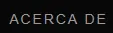
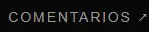
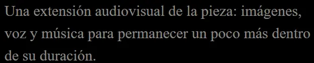
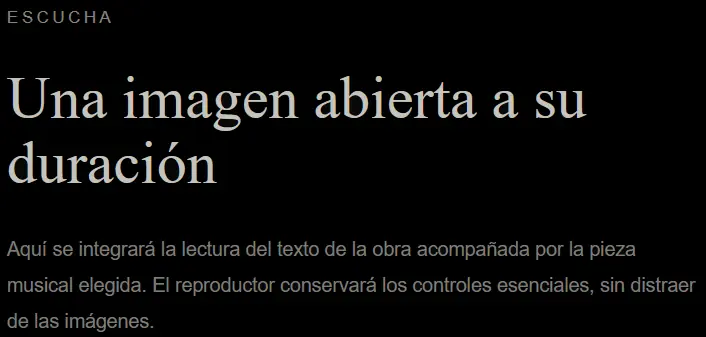

ARCHIVO EXPANDIDO


iframe id='iframe' src='https://lightroom.adobe.com/embed/shares/577a53fad3d241f89ce715c3a0d34b7e/slideshow?background_color=%232D2D2D&color=%23999999' frameborder='0'style='width:100%; height:100%; position: absolute; top:0; left:0;' >